500 trials per motor, no drogue, main at apogee + 1 second, 1 m rail. Mean wind 0–5 m/s, direction 0–360°, turbulence intensity 5–20%. Each completed trajectory stops at its first descending intersection with USGS terrain.
| Motor | Inside / finished | Inside | Excluded tumble aborts |
|---|---|---|---|
| HP-I500T | 474/475 | 99.79% | 25 |
| J570W | 468/498 | 93.98% | 2 |
These percentages are conditional on simulations that finished. The ground across the simulated landing points spans 267.0–274.4 m NAVD88. Terrain correction moves the endpoints by at most 4.2 m and does not change which side of the supplied boundary they fall on. All views use true scale.
Landing coordinates · GeoJSON · Methods and results · Validation
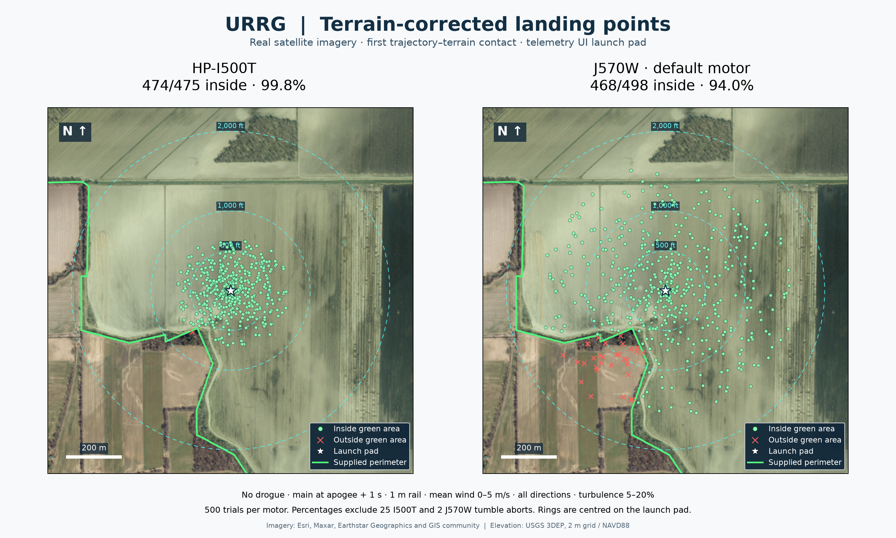
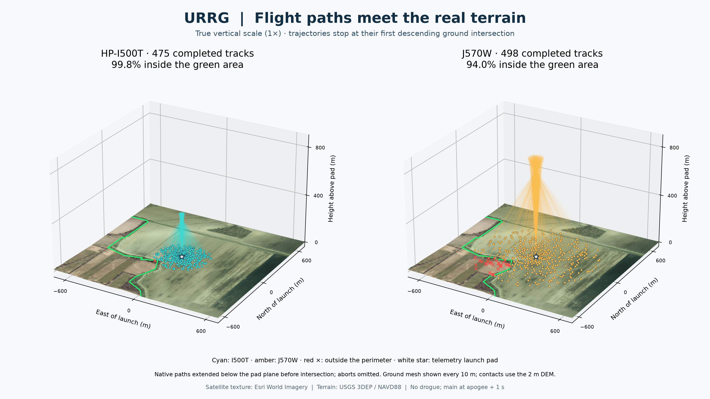
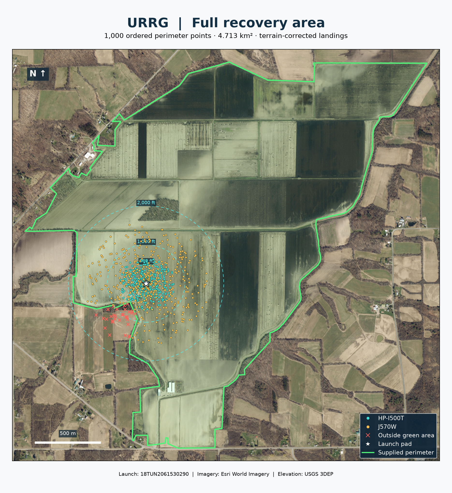
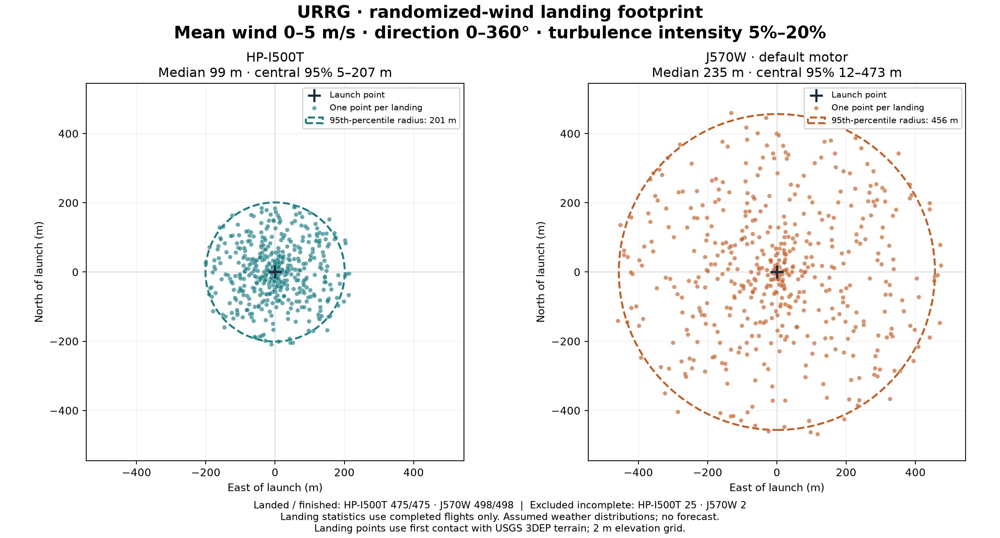
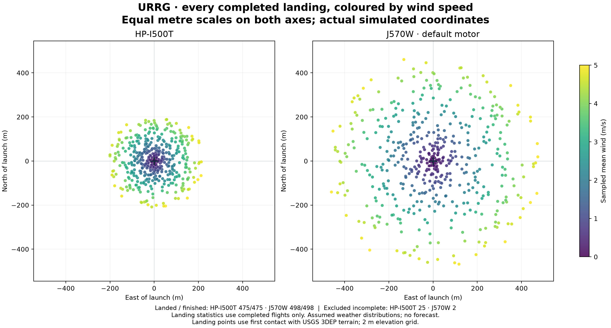
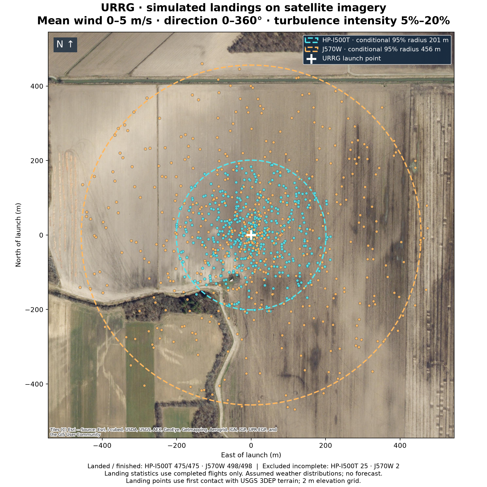
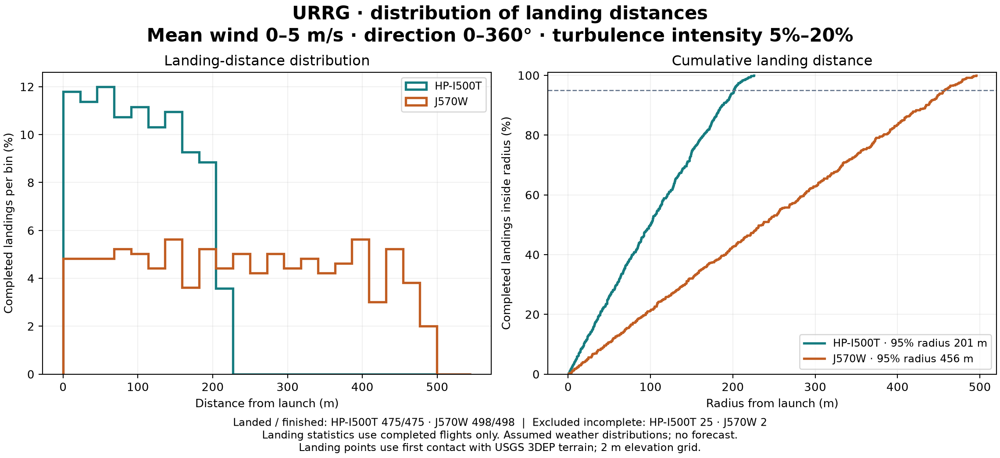
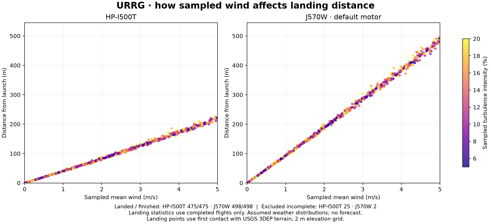
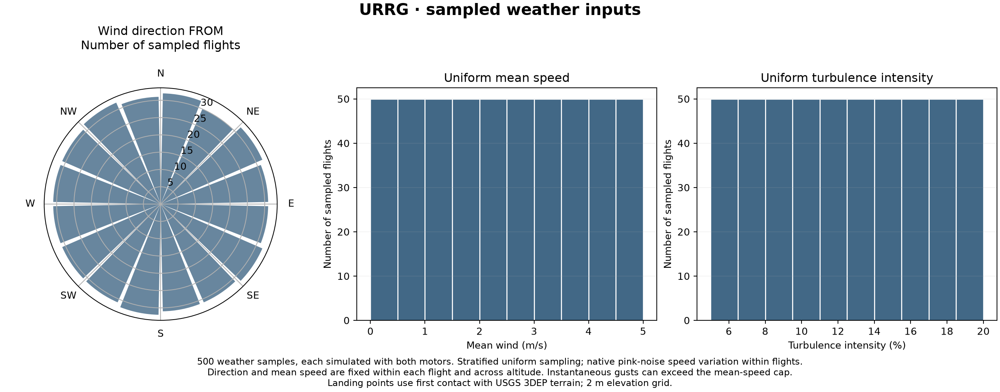
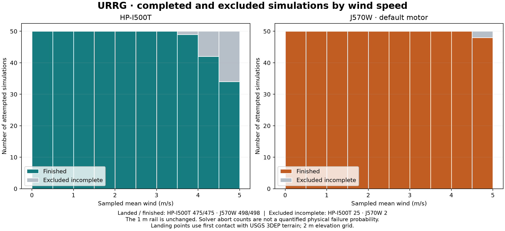
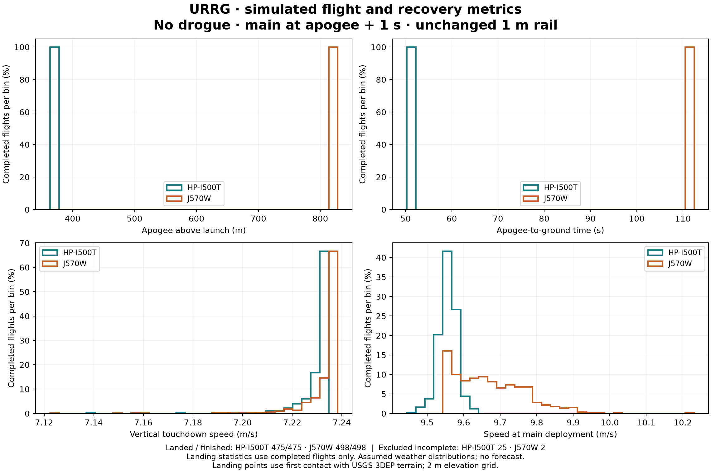
Imagery: Esri World Imagery. Elevation: USGS 3DEP, bare-earth model exported at 2 m. Launch coordinates from the telemetry UI preset; perimeter from the supplied MGRS file.